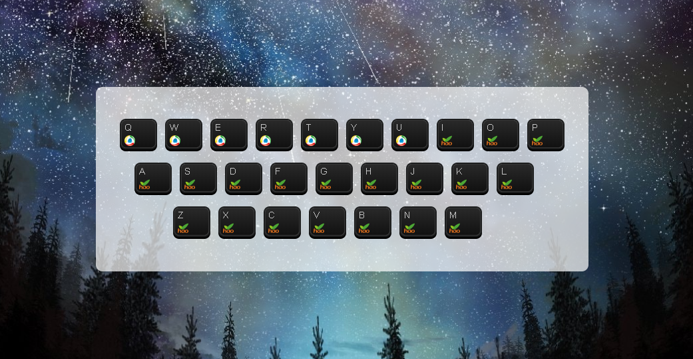

RS
card
关于
技能
作品
作品1
作品2
作品3
博客
博客1
博客2
博客3
日历
联系方式
其他
HELLO
李文瀚
前端开发工程师
年龄
18
所在城市
郑州
电话
155555444455
邮箱
liwenhansj@163.com
职业
前端工程师
下载PDF简历
李文瀚， 资深前端工程师，资深前端讲师，现在在 饥人谷 教前端课程。
技能：前端开发，Rails 开发，Node.js 开发
技能
HTML5&CSS3
JavaScript
jQuery
Vue
React
HTTP
作品集
